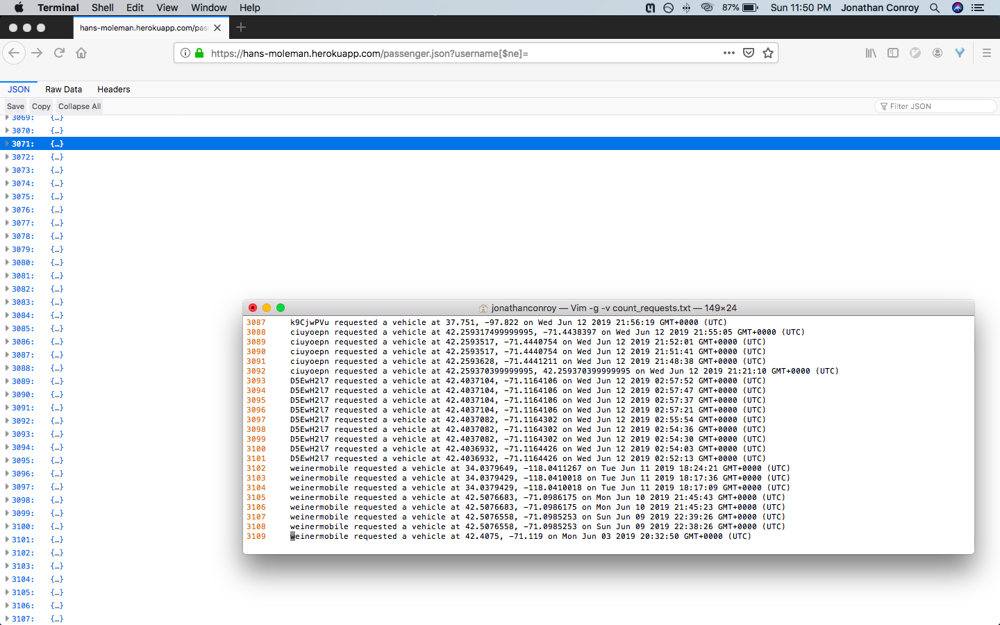
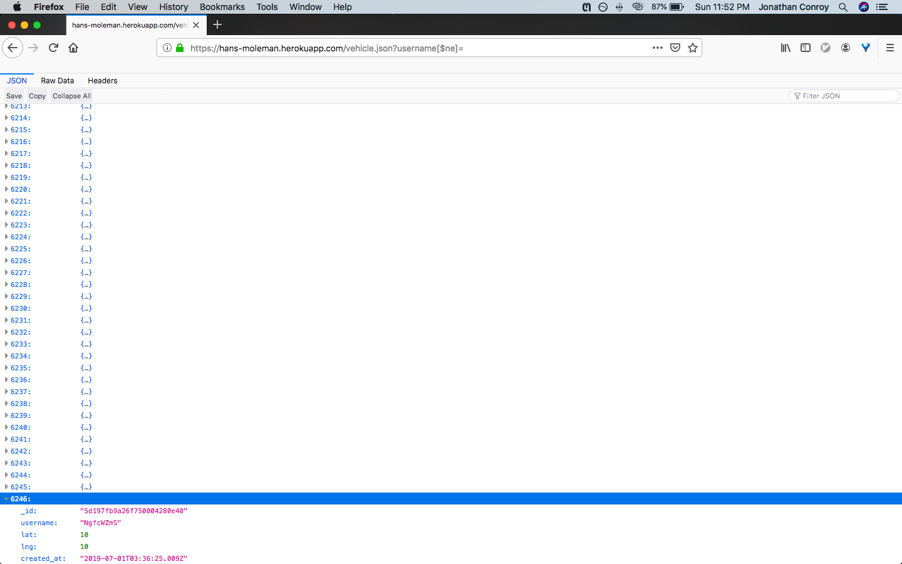

I attempted to find vulnerabilities in the ride-share API, located at https://hans-moleman.herokuapp.com/. This API is intended to be used as part of a ride-share service, where users can send requests to hail a vehicle and divers can signal their availability. It includes 5 endpoints:
I began with black-box testing, attempting to attack the server without viewing the source code. I primarily used the "curl" command-line utility. I then viewed the source code (white-box testing) and continued to search for vulnerabilities using curl and a web browser. I did NOT use tools such as BurpSuite or OWASP ZAP, but doing so would be a good start for further investigation.
The server contains severe vulnerabilities that present a danger to the user and can render the application practically useless. Three major flaws were found:
Severity: High. This exploit allows attackers to execute arbitrary javascript code on a user's computer.
Description: The GET "/" endpoint displays HTML that echos usernames without sanitization. An arbitrary string can be added to this HTML by making a POST request to "/rides", as this endpoint takes in a "username" as part of the request body and stores this string in a database without any sanitization. For example, the attacker could make the request:
curl https://hans-moleman.herokuapp.com/rides --data "username=<script> //arbitrary javascript here <script>&lat=0&lng=0".
When a user makes a GET "/" request, that username will be echoed onto the page and the arbitary javascript will be run. See the screenshot below where I caused the code "alert('Hello')" to be run upon page load.
Solution: This vulnerability can be patched by sanitizing user input. For example, instead of adding "results[count].username" to the HTML in line 140 of server.js, we could add "validator.escape(results[count].username)".
Severity: Low. This exploit exposes passenger data, but this information was mostly accessible through the "/" endpoint. This is mainly just bad programming practice and could potentially be used in other exploits that I have not found.
Issue: The username passed to the GET "/passenger.json" request is not sanitized before being used in a query to a MongoDB database. This allows attackers to search for values that not strings. Attackers can abuse the way parameters are parsed by the qs library to reveal all passenger logs, as opposed to the indended use case of revealing the logs of one specific passenger.
For example, when we send the request
https://hans-moleman.herokuapp.com/passenger.json?username[$ne]=
the username field is parsed as {$ne: ''}, which MongoDB matches to all usernames that are not null. This returns logs for the vast majority of passengers (and the remaining logs can be fetched with https://hans-moleman.herokuapp.com/passenger.json?username=).

This is not an immediate problem, as this data is publicly available via the GET "/". As seen in the screenshot below, there are almost exactly the same number of entries returned by the "/passenger.json" exploit and GET "/" request (the slight difference is due to one index starting at 1 as opposed to 0 and due to the exploit not returning logs associated with a username of null).
Solution: That being said, this is still bad practice and could potentially be exploited by a more creative attacker. The problem can easily be fixed by sanitizing user input. The "mongo-sanitize" library (https://github.com/vkarpov15/mongo-sanitize) provides a method that removes all keys starting with a '$'. We can use this to sanitize the input:
const sanitize = require('mongo-sanitize');
...
var usernameEntry = sanitize(req.query.username)
Severity: Medium-High. This exploit allows attackers to force the "/rides" endpoint to return meaningless data and muddles the logs in "/vehicle.json". The exploit is rated a bit lower than "high" because it does not allow the attacker to gain control of client-side or server-side computer (ie. execute arbitrary commands).
The MongoDB injection attack described in the previous section can also be used against the "/vehicle.json" endpoint to expose all logs for vehicle availablility. This is problematic, as the vehicle logs should not be publically accessible.
By revealing these logs, an attacker can find the usernames of all vehicles. These usernames are the sole form of authentication when making a call to the "/update" (which marks a vehicle as available). With this information, an attacker can impersonate a vehicle and make arbitrarily many calls to the "/update" endpoint, filling the availability database with inaccurate data, and therefore causing the "/rides" endpoint to return inaccurate data to users. In fact, if the attacker had enough time, they could exhaust the storage space of the database.
The screenshot below shows a request to "/rides" after repeatedly running
curl https://hans-moleman.herokuapp.com/update --data "username=mXfkjrFw&lat=0&lng=0"
This exploit (MongoDB injection) can be fixed in the same way as described in part (2): sanitizing user input with the mongo-sanitize library. Additional security could also be added to the "/update" endpoint (eg. a password associated with each username), though this is not as large a priority once attackers cannot find vehicle usernames easily.
The current application is extremely vulnerable. There are very quick fixes to the major problems. Adding authentication and rate limits to the POST endpoints could also be a worthwhile investement to limit an attackers ability to insert data into the server database.